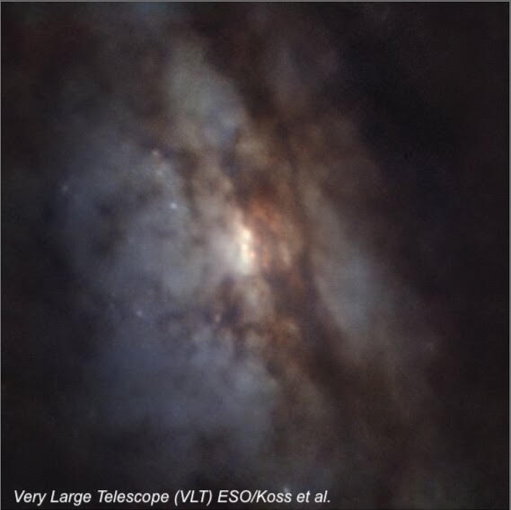
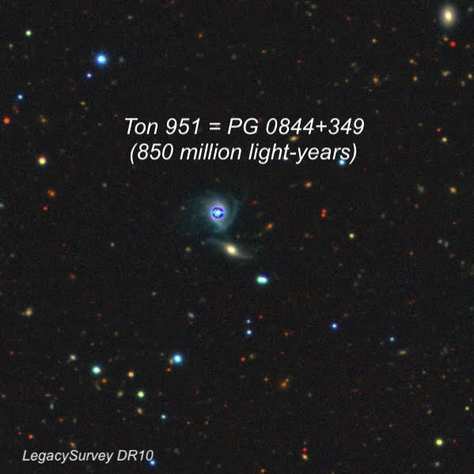
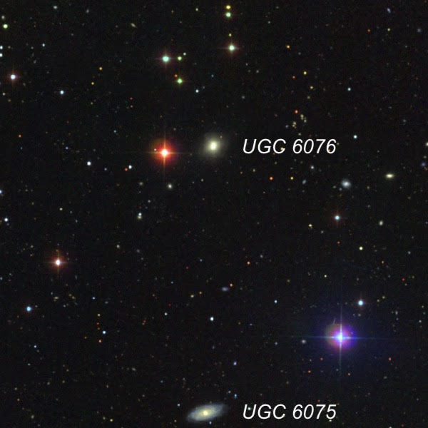

OR: A few unusual targets on March 16, 2026 in Glenn County
On March 16th and 17th I observed with Muriel Dulieu and Jim Molinari in Glenn County with my 24" f/3.8 Starstructure. Although the seeing was soft, the skies were clear and dark with an SQM reading of 21.6. I logged a total of 25 objects on the first night, mostly at 327x, and here are just a few of special interest.
UGC 4211 (closest known dual actively-feeding supermassive black holes)
08 04 46.4 +10 46 36; Cancer
V = 14.0; Size 1.2'×0.6'; PA = 30°
UGC 4211 is a late-stage galaxy merger with two extremely close nuclei separated by only 0.32 arcseconds! At the distance of the galaxy (about 500 million light-years), this corresponds with a physical separation of 750 light years. In 2023, a multi-wavelength survey using HST, VLT, and Keck spectroscopy at the Atacama Large Millimeter/submillimeter Array (ALMA), showed that both nuclei are powered by actively accreting supermassive black holes (SMBH) with masses of over 100 million Suns. This makes UGC 4211 the closest-separation dual active galactic nuclei (AGN) known, with a separation of just 6 times the black holes' spheres of influence. When the SMBH merge, they should trigger gravitational waves, though the event won't occur for a few hundred million years. You can read more about UGC 4211 at sci.news.
In my 24", UGC 4211 was easily seen as an elongated 2:1 glow oriented NE to SW, less than 1' in diameter, with a bright core. A faint 15th magnitude star is at the W edge.

Ton 951 = PG 0844+349 (a low-luminosity quasar 850 million light-years away)
08 47 42.5 +34 45 04; Lynx
V = 14.3-14.8; Size 0.45'×0.32'
Here's a designation you may not have seen before. Ton 951 was identified in 1959 as a blue/violet star in the Tonantzintla Blue Stellar Object Survey (TON) by Mexican astronomer Enrique Chavira. The survey searched for blue stellar objects as quasar candidates. The alternate designation PG 0844+349 is from the Palomar-Green Survey of stellar objects with ultraviolet excess and it was subsequently identified as a quasar in the 1983 Palomar Bright Quasar Survey by Maarten Schmidt and Richard Green. Spectroscopic investigations revealed a Seyfert 1 spectrum, which led to the quasar classification.
Technically, PG 0844+349 isn't intrinsically luminous enough to be considered a quasar today, but it hosts a Seyfert 1 active galactic nucleus (AGN) with a 21 million solar mass black hole. The galaxy lies at a distance of about 850 million light-years. Although the host galaxy wasn't noticed in the original discovery surveys, it is clearly visible today on deeper images as a disturbed face-on spiral galaxy about 20" across (dominated by its bright nucleus). A companion galaxy, PGC 2053896, is 30" SSW. Both galaxies show clear signs of interaction, including tidal arms.
At 326x, it was immediately identified in my 24" as a 14.5 magnitude "star". The location was easy to pin down 11.5' NW of STF 1272, a 19" pair of 8th and 10th magnitude stars. It often had a "soft" appearance and when the seeing was best, it clearly showed a very small halo (the host galaxy). The companion galaxy wasn't noticed.

UGC 6076 (a galaxy that should be in the NGC)
11 00 09.6 +45 55 01; UMa
V = 13.7; Size 0.8'×0.6'; PA = 146°
UGC 6076 is a rather ordinary elliptical galaxy, that is "quenched", meaning it has used up its gas supply and is no longer capable of new star formation. The UGC designation indicates it was discovered during the three large scale galaxy surveys (MCG, CGCG, and UGC) that are based on the Palomar Observatory Sky Survey in the early 1950s.
But actually the galaxy was discovered in April 1878 on my birthday (well, a few years before I was born) by Ralph Copeland, assistant to the 4th Earl of Rosse. Copeland, who is perhaps best known for the galaxy group "Copeland's Septet", was the observing assistant to the 4th Earl of Rosse and he was using the great 72-inch Leviathan. Unfortunately, he thought that he had observed NGC 3478, which he described as "faint, round, gradually brighter in the middle. A mag 9 star is 2' to the east in position angle 96.2°." The red star in the image below is exactly at Copeland's position, and it verifies that Copeland had actually discovered UGC 6076, which would be in the NGC if not for his misidentification! Interestingly, Copeland missed UGC 6075, which is similar in brightness.
Using 327x, UGC 6076 appeared as a fairly faint oval, about 40" × 30", leaning to the SSE, with a slightly brighter core. The reddish mag 10.6 star made the identification easy.
